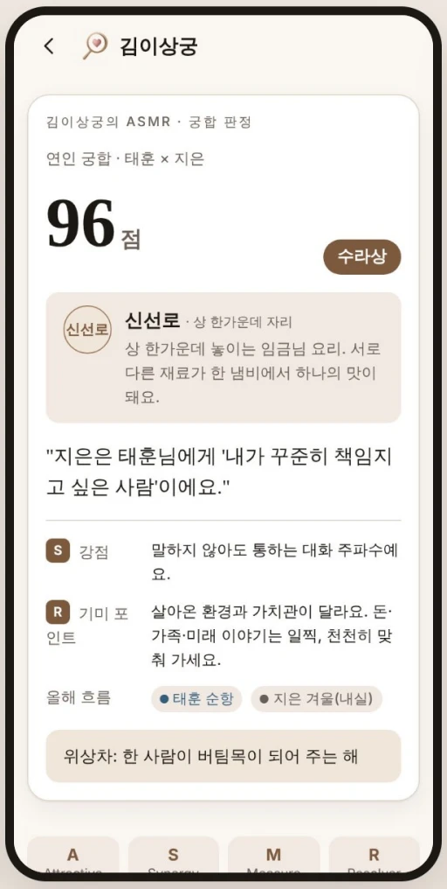
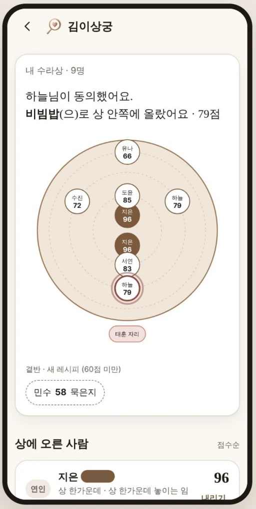

궁합 보는 법 · ASMR 엔진
사주·MBTI·자미두수 궁합, 김이상궁은 어떻게 보나요?
요약 답변
김이상궁의 궁합은 정들기 전에 감정을 지키기 위한 기미입니다. 사주(김상궁 · 타고난 기운), MBTI(이상궁 · 빚어진 기질), 자미두수(별의 지도) 세 겹의 결을 읽어 하나의 궁합 점수로 합치고, 사주는 대운·세운 같은 시기의 흐름까지 반영합니다. 점수는 판정이 아니라 한 상의 음식으로 보여 주며, 90점 이상 「수라상」부터 60점 미만 「새 레시피」까지 5단계입니다.
- 분석 축
- 3개
- 등급
- 5단계
- 최고 등급
- 수라상 (90점+)
- 낮은 점수
- 상대에게 비표시
세 겹의 결은 각각 무엇을 보나요?
| 이름 | 도구 | 읽는 것 |
|---|---|---|
| 김상궁 | 사주(四柱) | 타고난 기운. 생년월일시로 본 기질과 대운·세운의 흐름 |
| 이상궁 | MBTI | 빚어진 기질. 살아오며 굳어진 성향과 대화 방식 |
| 별의 지도 | 자미두수(紫微斗數) | 별의 배치로 본 관계의 결 |
세 결과를 따로 보여 주지 않고 한 점수로 통합하는 것이 김이상궁 궁합 엔진(ASMR)의 특징입니다. 이 통합 엔진은 MVP에서 이미 작동합니다.
점수는 어떤 등급으로 나오나요?
| 궁합 점수 | 등급 | 대표 음식 | 상 위의 자리 |
|---|---|---|---|
| 90점 이상 | 수라상 | 신선로 · 구절판 | 상 한가운데 |
| 80~89점 | 진수성찬 | 갈비찜 · 잡채 | 임금님 바로 앞 |
| 70~79점 | 정갈한 한 상 | 비빔밥 · 불고기 | 상 안쪽 |
| 60~69점 | 간 맞추는 중 | 된장찌개 · 나물무침 | 상 가장자리 |
| 60점 미만 | 새 레시피 | 묵은지 · 청국장 | 곁반 |
음식 등급은 기미의 밤에서 받는 음식 등급 카드와 궁합 리본 맛집의 시그니처 안주로 이어집니다.
궁합 결과 화면에는 무엇이 나오나요?


- 점수와 등급: 예) 96점 · 수라상 · 신선로
- 상대가 본 나: 예) "내가 꾸준히 책임지고 싶은 사람"
- 강점(S)과 기미 포인트(R): 잘 통하는 점과 천천히 맞춰 갈 점
- 올해 흐름: 두 사람 각자의 세운
점수가 낮으면 어떻게 되나요?
낮은 점수도 '숙성되는 사이', '알고 나면 깊은 맛'으로 말합니다. 낮은 점수는 상대에게 보이지 않고, 기미의 밤에서는 점수 숫자 대신 음식 등급만 보여 줍니다. 궁합은 관계를 끝내는 판정이 아니라 서로를 알아 가는 대화 재료입니다.
사주·MBTI·자미두수는 과학적으로 검증된 심리 검사나 관계 진단이 아닙니다. 김이상궁의 궁합은 자기이해와 대화를 돕는 참고 정보로 제공되며, 중요한 결정은 실제 대화와 경험으로 판단하시길 권합니다.
자주 묻는 질문
사주와 MBTI 중 무엇을 더 중요하게 보나요?
어느 하나만 보지 않습니다. 사주(타고난 기운), MBTI(빚어진 기질), 자미두수(별의 지도) 세 결을 한 점수로 통합합니다.
궁합 점수 90점 이상은 무슨 뜻인가요?
김이상궁의 최고 등급 「수라상」입니다. 대표 음식은 신선로·구절판이고, 내 수라상 화면에서 상 한가운데에 놓입니다.
궁합이 60점 미만이면 안 맞는 건가요?
아닙니다. 60점 미만은 「새 레시피」(묵은지·청국장) 등급으로, 시간이 지나야 맛이 드는 사이라는 뜻으로 표현합니다. 낮은 점수는 상대에게 보이지 않습니다.
궁합을 보려면 무엇이 필요한가요?
사주와 자미두수를 위한 생년월일, 이상궁을 위한 MBTI 유형이 필요합니다. 생년월일은 암호화해 저장하고 상대에게는 기질 코드와 등급만 보입니다.
궁합 결과를 믿어도 되나요?
사주·MBTI·자미두수는 과학적 검증 도구가 아닙니다. 김이상궁은 결과를 판정이 아닌 대화의 재료로 쓰도록 설계했습니다.
근거 자료
- 김이상궁 최종 기획서 「런칭과 확장」 (2026), Score → 수라상 장